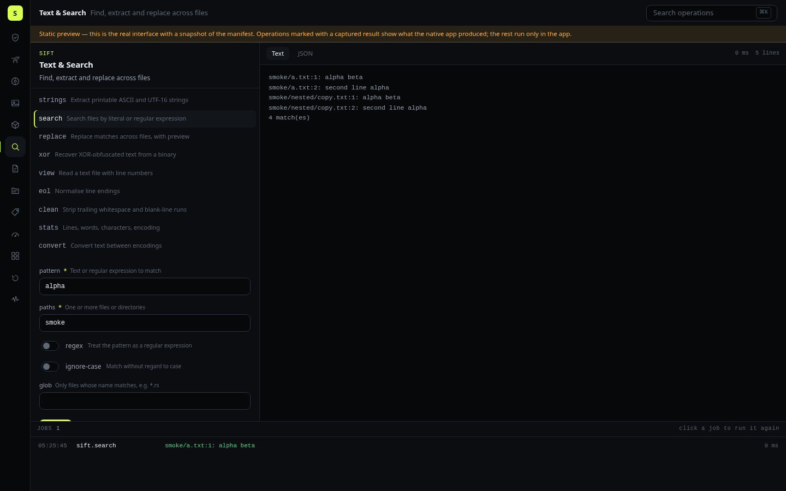

Plate 01A Rust workspace
Twenty-two small Windows utilities shared one architecture and fifteen thousand lines of duplicated window code. This keeps the logic, throws that away, and puts thirteen modules behind one command line and one desktop app.

01Method
The portfolio was never short of features. It was short of one place to declare them, and it had fifteen thousand lines of window code that nobody wanted to write twice.
Every operation is declared once, with its parameters, danger level and status. The CLI's parser, the app's forms and the numbers on this page all read from it. A test asserts the count, so the documentation cannot drift.
The command line and the window call the same implementation. Neither owns logic, so a fix lands in both at once and they cannot quietly disagree about what an operation does.
An operation declared but not yet ported refuses by name. Anything destructive previews before it writes. Where an original was a simulation, it says so.
02Schedule
Grouped by the job, not by how the code was written. Each keeps the name it had on its own; the two sources in the fourth column are the applications it replaces.
03Listing
The app shows the equivalent command under every form, so what you learn in the window works in a script. Same binary, same code underneath.
# find a string across a tree, as a literal or a regex savehorse sift search "TODO" ./src --regex # replace across files — preview first, then apply savehorse sift replace old_name new_name ./src --dry-run savehorse sift replace old_name new_name ./src --backup # catalogue a folder, then reclaim the duplicates savehorse scout catalog ~/Pictures --format markdown --out catalog.md savehorse scout duplicates ~/Downloads savehorse scout clean ~/Downloads --commit # encrypt, then destroy the plaintext savehorse aegis encrypt notes.txt --out notes.vault --passphrase ······ savehorse aegis shred notes.txt --dry-run # build an ISO, verify it, then snapshot it savehorse halo create ./disc --out disc.iso --volume-id BACKUP savehorse halo verify disc.iso savehorse revive pack ./disc --out disc.chronos # carve files out of a blob, and read a PE header savehorse revive carve disk.img --out recovered savehorse forge inspect app.exe # rename a batch, with an undo journal savehorse morph rename ./photos --case title --number --journal undo.json
04Readout
A migration in progress, not a finished product. Every number below is asserted by a test in the repository, so none of them can quietly go stale.
| Measure | Now |
|---|---|
| Modules | 13 |
| Operations declared in the manifest | 87 |
| Operations ported and tested | 73 |
| Tests, on Windows, macOS and Linux | 153 |
| Modules fully ported | 10 / 13 |
| Desktop app | Tauri 2 + React |
One operation is left: pulse priority, which needs a privileged platform call on every operating system.
05Support
savehorse is free for personal, academic, hobby and non-profit use. If it saved you a week, the usual shapes are below — and the first one costs nothing.
Sponsorship pays for the time, not for features: nothing here becomes paid-only, and the source stays under the same licence either way.